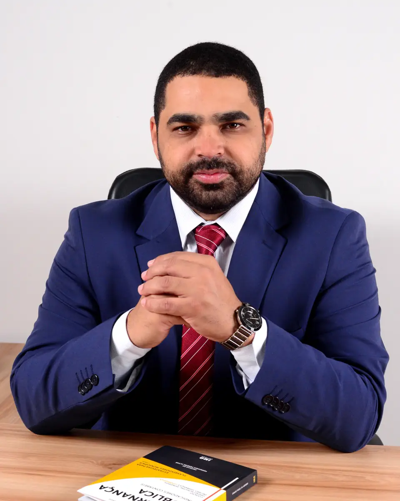
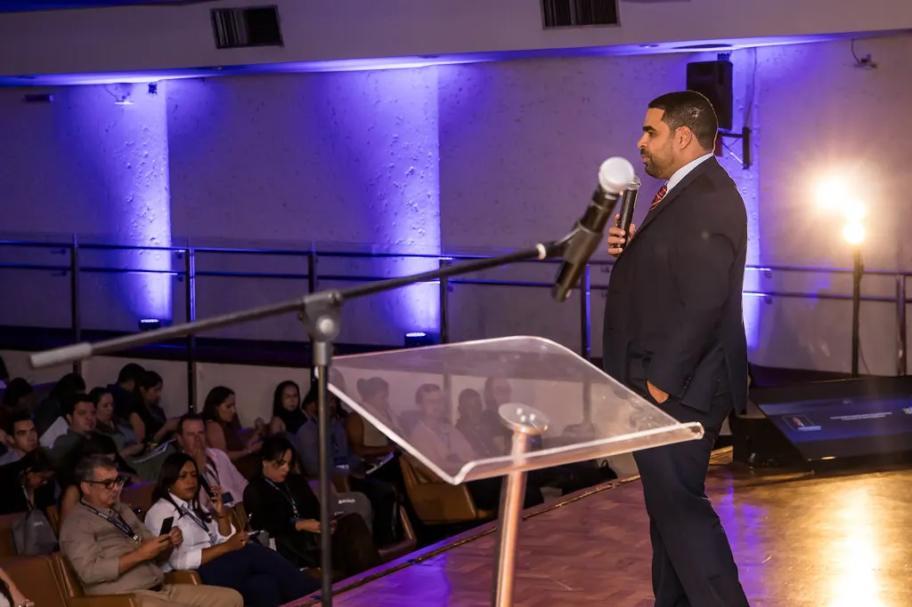
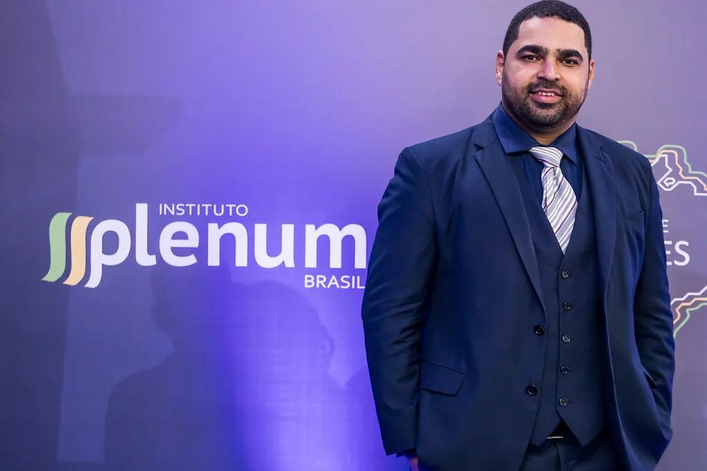
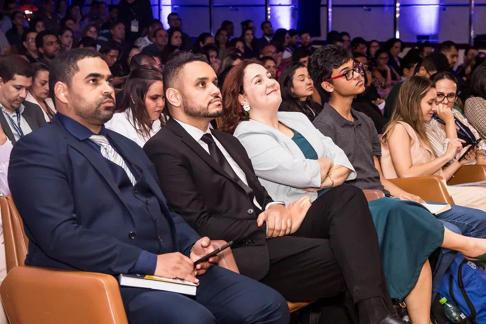
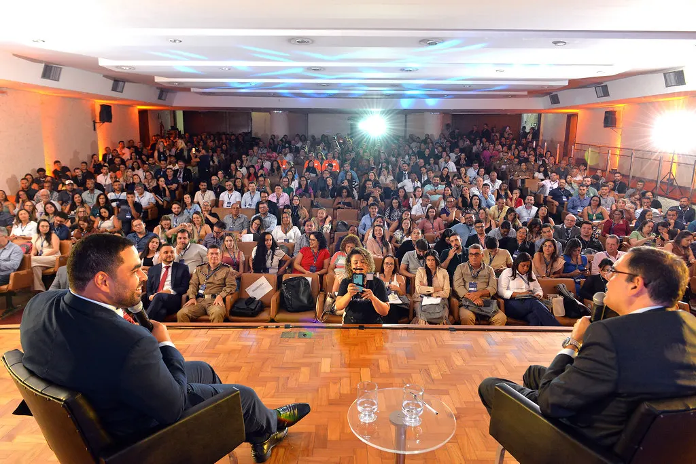
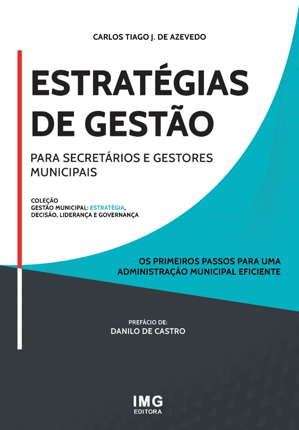
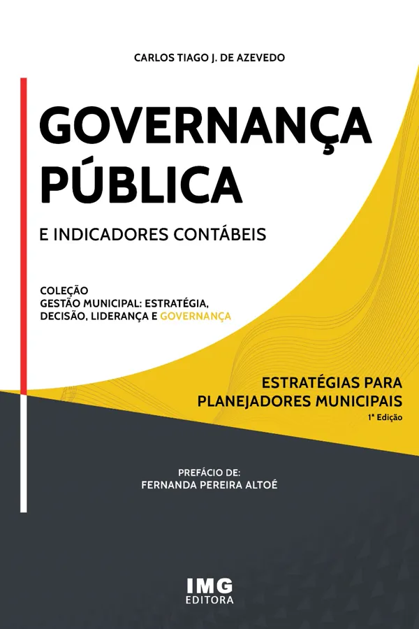

Atual
Presidente
Instituto Minas Gerais de Pesquisa, Ensino e Inovação (IMG). Projetos de governança pública, planejamento estratégico e capacitação de gestores.
IMGHoje
Minas Gerais
Brasil
Gestão pública · Licitações e contratos · Governança
Professor, consultor e autor. Forma servidores e gestores de prefeituras e câmaras municipais na aplicação da Lei 14.133/21 e preside o Instituto Minas Gerais de Pesquisa, Ensino e Inovação.
Cenas reais de palestras e cursos · ver os reels01 Perfil
Teoria e prática da administração pública, ensinadas por quem já esteve dos dois lados do balcão: no Executivo, no Legislativo e na pesquisa.

O Prof. Carlos Tiago é mestrando em Direito e bacharel em Ciências Sociais pela Universidade Federal de Viçosa, com ênfase em Ciência Política. Atua como consultor em administração pública, com experiência em auditorias, elaboração de peças orçamentárias, licitações e contratos.
Foi Secretário Municipal de Planejamento e Desenvolvimento Econômico, Chefe de Gabinete e Assessor Especial na Prefeitura de Ponte Nova (MG), e Chefe de Gabinete Parlamentar na Câmara Municipal de Belo Horizonte. Hoje preside o Instituto Minas Gerais de Pesquisa, Ensino e Inovação (IMG), onde coordena projetos de governança pública, planejamento estratégico e capacitação de gestores.
É autor de livros técnicos sobre administração pública municipal e professor em cursos de especialização.
Gestão pública e planejamentoLicitações e contratosGovernança públicaAuditoria de contratos e convêniosElaboração de projetos de leiConsultoria técnica e institucionalCapacitação de gestores
02 Trajetória
Uma carreira construída dentro da administração pública, e depois dedicada a ensiná-la.
Arraste ou role →Atual
Instituto Minas Gerais de Pesquisa, Ensino e Inovação (IMG). Projetos de governança pública, planejamento estratégico e capacitação de gestores.
Executivo municipal
Prefeitura Municipal de Ponte Nova (MG).
Executivo municipal
Prefeitura Municipal de Ponte Nova (MG).
Legislativo
Câmara Municipal de Belo Horizonte.
Imprensa
Jornal O Município.
Formação · em andamento
Faculdade de Direito do Sul de Minas.
Especialização
Administração Pública. Universidade de Caxias do Sul.
Especialização
Administração Pública. Fundação João Pinheiro.
Graduação
Universidade Federal de Viçosa. Monografia: “Pacto Federativo Brasileiro: a construção do índice de desempenho contábil para os municípios da Zona da Mata Mineira”.
Formação complementar
Extensão em Língua Francesa (CELIF, 60h), UFV. Cursos na Universidade da Beira Interior, Portugal: Sociologia Política, Ética, Governança Internacional, entre outros.
03 Atuação
Aplicação da Lei 14.133/21: planejamento das contratações, condução dos procedimentos e gestão dos contratos.
Estruturas, normas e indicadores de governança para a administração municipal.
Planejamento estratégico e elaboração de peças orçamentárias.
Auditoria de contratos e convênios.
Redação de projetos de lei e consultoria técnica e institucional ao Legislativo e ao Executivo.
Treinamentos para secretários, servidores e equipes de câmaras e prefeituras.
Conseguimos aliar teoria e prática de forma efetiva na implementação da Lei 14.133/21.Éric Geovanne Soares Boas · Câmara Municipal de Bocaiúva
04 Cursos e palestras
Cursos, treinamentos e palestras sobre gestão pública, licitações e governança, para órgãos públicos de todo o país.




Registros de palestras e seminários sobre contratações públicas.
05 Em cena
Trechos de palestras, cursos e entrevistas publicados no Instagram. Eles começam em movimento, sem som; abra qualquer um para assistir com áudio.
TV e YouTube
Vídeos do canal do Instituto Minas G1erais no YouTube e do perfil @prof.carlostiago no Instagram.
06 Publicações

Os primeiros passos para uma administração municipal eficiente.

Estratégias para planejadores municipais.
07 Instituto
Presidido pelo Prof. Carlos Tiago, o IMG coordena projetos de governança pública, planejamento estratégico e capacitação de gestores, e publica, pela IMG Editora, a coleção Gestão Municipal.
Projetos que fortalecem a gestão e a transparência dos municípios.
Apoio técnico para planejar, executar e medir resultados.
Formação de servidores e lideranças públicas.
08 Imprensa
09 Depoimentos
Foi através dos cursos conduzidos por ele que conseguimos adquirir conhecimento técnico de forma prática, didática e extremamente útil para o dia a dia da função pública.
“O conteúdo é sempre muito bem estruturado, prático e aplicável no dia a dia do servidor público. A didática é clara, envolvente e demonstra o domínio e a paixão do professor.”
“As aulas são altamente didáticas, com conteúdo direcionado à prática cotidiana dos órgãos públicos. O professor sempre se mostrou solícito e disponível para esclarecer todas as dúvidas.”
“O Professor Carlos Tiago teve papel fundamental na nossa capacitação para a implementação da Lei 14.133/21 na Câmara Municipal de Bocaiúva.”
10 Contato
Para propostas e parcerias, fale diretamente com o Prof. Carlos Tiago.